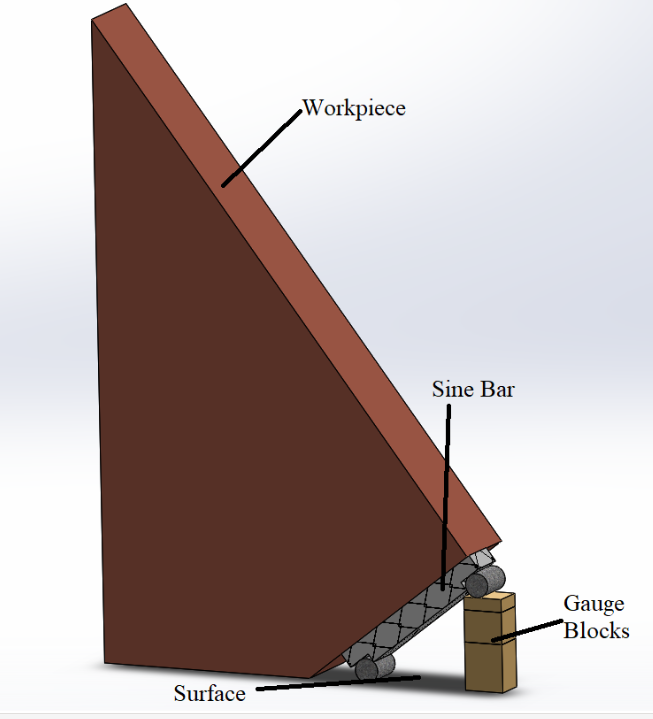

Theory
A sine bar is a precision measurement tool used to set or measure small angles accurately by converting angular values into linear heights using the trigonometric sine function. The sine bar consists of a hardened and ground bar having two precision cylindrical rollers fixed at its ends; the distance between the centers of these rollers is a known length (commonly 100 mm or 200 mm). When one end of the sine bar is raised by a known height (usually by stacking gauge blocks under that end), the bar forms an angle θ with the horizontal such that the relation sin θ = h / L holds, where h is the height difference between the roller centers and L is the center-to-center distance of the rollers. By measuring h precisely with gauge blocks and knowing L, one can calculate θ = sin-1(h/L). This principle allows accurate measurement of small angles without needing direct protractors or optical equipment.
Measuring a tapered angle (or taper per unit length) generally involves placing the tapered workpiece on a sine bar aligned so that the taper axis is parallel to the rollers. The sine bar is adjusted until the contacting surface (often a reference flat on the workpiece) is level with a datum or gauge; the height required to achieve this level condition corresponds to the taper angle. From the measured angle θ and the known length over which the taper occurs, the taper per unit length (for example, mm per 100 mm or mm per inch) can be computed. Accuracy depends on the precision of gauge blocks, the flatness and cleanliness of contact surfaces, the exactness of the sine bar’s center distance, and elimination of sources of error such as parallax when reading scales or imperfect seating of blocks. In modern virtual-lab implementations, the same physical principles are simulated: users choose a sine-bar length, add gauge blocks from a calibrated set, and the system computes h, θ, and taper per length — while visually illustrating alignment, errors from sloppy setup, and the sensitivity of angle to small height changes.
Apparatus & Materials:
- Sine bar (center-to-center distance L = 100 mm or 200 mm).
- Slip gauge (gauge block) set (calibrated) to build required heights.
- Surface plate (granite) — clean and level.
- V-blocks or parallels (to support cylindrical or irregular components).
- Dial gauge or height gauge (optional, for verifying gauge-block stack).
- Spirit level (precision) — optional for coarse leveling.
- Workpiece with taper (or a tapered test specimen).
- Engineer’s square and cleaning tissue/solvent for removing dust/oil.
- Vernier caliper or micrometer (to measure taper length if needed).
- Marker or scribe for datum lines.
- Safety gloves and goggles (for handling heavy blocks).

Worked example
Suppose you use L = 100.000 mm and you stack gauge blocks to get h = 1.745 mm. Then:
- Calculate sin θ = h / L = 1.745 / 100.000 = 0.01745
- Find θ = sin-1(0.01745) ≈ 1.000°
- tan θ ≈ 0.01746 mm/mm, so taper per 100 mm = 0.01746 × 100 ≈ 1.746 mm/100 mm.
This means over 100 mm length the diameter/height would change by ≈1.746 mm according to that angle.
Precautions:
- Ensure the surface plate and roller seating surfaces are clean and free of dust or burrs; a tiny particle can introduce significant error.
- Use calibrated gauge blocks and wring them properly (in a physical lab). In simulation, ensure “wringing quality” is set to good for best accuracy.
- Keep the sine bar center distance L known precisely (use its certified value).
- Align the workpiece so the taper axis is exactly parallel to the roller axis — any misalignment introduces cosine/sine projection errors.
- Avoid parallax when reading scales; use a dial gauge or digital readout where possible.
- Repeat the measurement and average multiple trials to reduce random error.